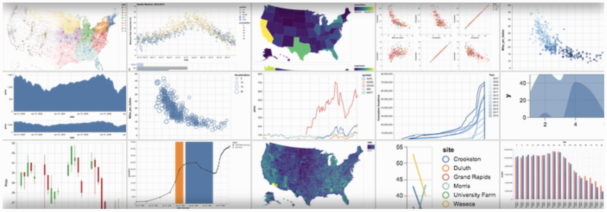

Python Science "Pipeline"/"Flow"
This document is created to link my personal files, and locate faster some resources, concepts, codes that I found inside the books in previous lectures. It tends to guide my AI team easy and faster to resources very spread on Internet.
The order here is important, is the way in which I see the process:
Contain the basics on ML. The second part is a broad description of ML pipeline. And the last part is well detailed (by chapter) exposition of Real World Case Studies.
General Pipeline
- Collecting Data
- Data Munging
- Data Wrangling
- Data Analysis/Exploring
- Feature Extraction
- Dimensionality Reduction
- Outliers Treatment
- Testing & Validation
- Hyper-param optimization
- Feature Selection
- Data Plotting/Visualization
- Building Models
- Model Evaluation
- Deploying Models into Apps
- Monitoring Models (Feedback)
Basik Knowledge

Baselines Methods / Important Knowledge
- About Machine Learning
- Supervised Classification
- Semi-Supervised Reinforcement Learning
- Unsupervised Clustering, Anomaly detection
- About Software Architecture
- Microservices
- Any other?
Resources
Applications - Products
Technologies
Data Base Management System
- mariadb/mysql
- Mongodb
- Clickhouse
Text Wrangling
- Spacy & sus modelos
- lib propia: preprocess (depend on scipy, nltk & sklearn)
- Stanford library y su api de python (inside NLTK)
Data Analysis
Visualization with Altair
notebook collection
Altair

Deep Learning
- Tensorflow
- pandas.visualization
- Model Visualization: Tensorboard
Optimization
- Usar cython
- GPU con PyCuda
- Usar Fortran
- Ver paralelización con Apache Spark
Deploying & Scaling Services
Web UI:
Pipeline Introspection
Standards
DataTypes
- Apache Parquet: A columnar data format.
- Apache Arrow: In memory columnar data format
- CSV
- HDF5
- pandas.DataFrame
Links